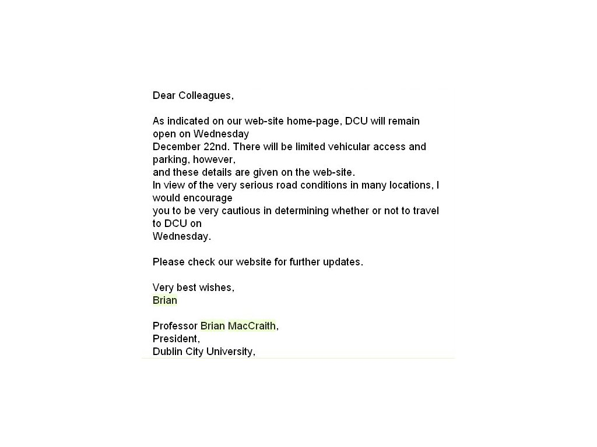

Dublin City University
Lisans Öğrencileri
- Her öğrencinin üniversiteye kayıt olurken anında elde ettiği öğrenci kimlik kartı var. Bu karta para yükleyerek öğrenciler yazıcıdan çıktı alabiliyorlar.
- Öğrencilerin bilgisayarları kullanabilmeleri için bir kullanıcı adı ve şifresi var. Her öğrenciye sistemde 250MB kadar bir alan veriliyor. Öğrenciler böylelikle tüm ödevlerinde ve çalışmalarında bu bilgisayarları kulanıyorlar.
- Bilgisayar laboratuvarları sabah akşam öğrencilerin kullanımına açık.
Doktora Öğrencileri
- Doktora öğrencileri ve benim gibi postdoc araştırmacılar sadece tezlerini yazıp, araştırmalarını yapıyorlar. Her dönem başında uygulamalı dersler için insan
kaynakları departmanı iş ilanı çıkartıyor ve isteyen buraya basvurarak doktora burslarına (yıllık 25000 euro kadar) ilave olarak uygulama derslerinden para
kazanıyorlar, ya da dersin hocasının önceden ayarladığı bir doktora öğrencisi varsa bu kişinin adını insan kaynaklarına bildiriyor ve saatlik ders parası
kişinin hesabına yatıyor. Her ek iş para karşılığında yapılıyor. Çünkü araştırma yapmak herşeyden önemli.
- Kağıtların okunması zamanında ise dersin hocası kağıtlarını kendi okuyor ya da yardım alacaksa yine önceden insan kaynaklarına destek istediğini ve kaç kişi
ile çalişacağını bildiriyor. Her bir kağıt 5 euro karşılığında okunuyor. Bu işi yapmak için eğer hoca önceden gerekli bağlantıları kurmadıysa kağıt başına 5
euroyu kendi cebinden veriyor.
Kongre Desteği
- Üniversite çapında işleyen CORE denen bir sistem var. Bu sistem akademik kadronun tüm kongre vs. masraflarının karşılanması için destek başvurularını online
olarak yaptıkları bir sistem. Ben de başvurdum ve iki kongreye gittim. Ne kadar masrafım olduysa hepsi karşılandı. Ki ben bir personel değildim. Bu çok önemli.
Kütüphane
- Kütüphane inanılmaz büyük, 1200 masa, öğrencilerin gruplar halinde çalışabilecekleri 18 oda, 400 tane internet bağlantısı olan bilgisayar var. Kütüphaneye giriş çıkış ögrenci kartlarıyla. Kitap ödünç almak da aynı şekilde. Ben 2001'de İTÜ'den mezun olurken bizde bu sistem vardı: Yıl 2001. İÜ'de halen yok!.. : Yıl 2011. Bu da
DCU'nun sayfasından bir cümle:
Although there are over 250,000 volumes in the library, DCU will continue to grow with the technological information revolution.
Bizde de şöyle bir uygulama var, geçen hafta çektim:
Kütüphane cumartesi de açık. Hafta içi ptesi-perşembe 10'a kadar, cuma 9'a kadar açık (Akşam). Bu saatler dışında kitap geri vermek istenirse kütüphane dışından kitapların atıldığı bir bölme var.
DCU Library
Kitap rezerve, uzatma vs. işlemleri buradan yapılıyor. Aradığınız bir kitaba ulaşmak mümkün. Ne zaman döneceğini öğrenmek mümkün.
Spor İmkanları
- Herkes spor salonuna üye ve öğle tatilinde herkes hemen ya yüzme ya da fitness salonunda. Yüzme havuzu yarı olimpik, sauna, buhar banyosu, tepidarium ve
jakuzisi var. Bunları kullanmak üye olan herkese sınırsız. 6 aylık öğrenci üyeliği 150 euro. Engellilerin, çocukların, büyüklerin katıldıkları yüzme dersleri var. Karma yüzme, herhangi bir problem olmuyor. Aksam 10'a kadar açık.
Sosyal İmkanlar
- Kampüste Süpermarket var. Bildiğiniz süpermarket + öğlen/sabah yemek veren bir süpermarket.
-
Yemekhanede tek çeşit yemek çıkmıyor, yaklaşık 10 çeşit yemek var. Ucuz ve lezzetli. Tepside porselen tabakta sunum.
- The HUB denilen öğrencilerin sosyalleştiği bir yerleri var. Büyük bir kitapçı ve öğrenci radyosu, bilardo vs.
- The Helix.
- Veee bir de kocamaan bir park var, yemyeşil, herkes yürüyüşte, halka açık ama üniversiteye bağlı. Öyle kimlik vs kontrolü zaten yok. İsteyen üniversiteye girip çıkabiliyor.
Çalışanlar ve Akademik Yaşam
- Tüm çalışanların üye olduğu email grupları var. üyelik kişilere bildirerek değil, bir linkten istenilen gruplara kayıt olma ile gerçekleşiyor. Ben hem
üniversitenin hem de fakültenin email gruplarına hemen üye olmuştum. İÜ İşletme'de 10 yıldır asistanım, dekanlık duyuruları bana gelmiyor. Birilerine bildirmek gerekiyormuş. Kime
olduğu belli değil.
- İnanılmaz kar yağdı ve üniversitenin rektörü bu email grupları aracılığıyla tüm gelişmeleri günde 5 kez email yollayarak haber verdi:

Okul tatil oldu mu olacak
mı haberlerini doğrudan rektörden almak başka bir gelişmişlik göstergesi. İnsana ve çalışana olan önem ortada. Bu bilgiler aynı zamanda hemen internet
sitesinde duyuruluyor. Bizde ise sürekli haber yayını yapan tv kanallarında acaba İÜ tatil mi diye aramak zorunda kalırız.
- Fakülte ile ilgili üye olunabilen bir google-calendar uygulaması var. İsteyen bu takvimi kendi gmail takvimlerine entegre ederek tüm toplantı vs.'den haberdar
olabiliyor. Toplantı haberleri kağıtla değil, email yoluyla gönderiliyor. Diğer etkinliklerden haberdar olmamak elde değil. Hem üniversitenin sayfasında takvim var hem de email yoluyla tüm etkinlikler bildiriliyor.
- Uygulama dersleri öğrencilerin çalıştığı saatler olarak görülüyor. Dersten önceki gün uygulama soruları internette hocanın sayfasında veriliyor, öğrenciler bu
soruları indiriyor, eğer kendi başlarına yapabiliyorlarsa uygulamaya gelmiyorlar, yapamıyorlarsa geliyorlar. Ama yine burada da asistan soruları çözmüyor,
tamamen yol gösterici rolünde, takıldıkları yerlerde öğrencilere yardım etmekle görevliler. Yani tamamen hands-on bir uygulama.
- Hocaların olduğu bölüme kartla giriliyor, öğrenciler hocalardan biriyle görüşmek isterse kapının yanındaki telefondan dahili numarayı arıyor ve hocaya
ulaşıyor.
Herkesin yüzü gülüyor, insanlar mutlu. Nasıl olmasınlar!